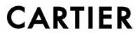
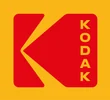
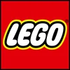
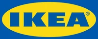
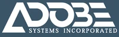
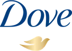

브랜드 연대기
브랜드의 역사, 인장에서 AI까지
원통인장과 가축 낙인에서 길드 마크와 상표법을 지나, 로고·브랜드 컬러·광고·이론·디지털과 AI까지. 브랜드를 만든 사건 473개를 10개 분야로 나란히 놓았습니다. 같은 해 다른 분야에서 무슨 일이 있었는지 가로로 읽고, 브랜드 이름을 누르면 브랜드 사전의 항목으로 이어집니다.
- 473기록
- 10분야
- 8시대
- 131사전 연결 브랜드
카드를 누르면 설명과 같은 시기의 기록이 열립니다. 격자 안에서 스크롤하세요.
연대기에 나오는 브랜드
첫 등장 연도순 · 131곳 · 로고를 누르면 브랜드 사전 항목으로 갑니다
- 곤고구미(Kongō Gumi)578 · 연대기 1건
- 스텔라 아르투아(Stella Artois)1366 · 연대기 1건
- 영국 동인도 회사(East India Company)1600 · 연대기 1건
- 모엣&샹동(Moet & Chandon)1743 · 연대기 1건
- 듀폰(DuPont)1802 · 연대기 1건
- 콜게이트-파몰리브(Colgate-Palmolive Company)1806 · 연대기 1건
- 에르메스(Hermès)1837 · 연대기 3건
- 프록터 앤드 갬블(Procter & Gamble)1837 · 연대기 1건

까르띠에(Cartier)1847 · 연대기 1건- 리바이스(Levi's)1853 · 연대기 1건
- 루이비통(Louis Vuitton)1854 · 연대기 3건
- 버버리(BURBERRY)1856 · 연대기 2건
- 바카디(BACARDÍ)1862 · 연대기 1건
- 하이네켄(Heineken)1864 · 연대기 1건
- 네슬레(Nestlé)1866 · 연대기 1건
- 하인즈(Heinz)1869 · 연대기 1건
- 시세이도(SHISEIDO)1872 · 연대기 1건
- 코카-콜라(Coca-Cola)1886 · 연대기 9건
- 존슨앤드존슨(Johnson & Johnson)1886 · 연대기 1건

코닥(Kodak)1888 · 연대기 1건- 필립스(Philips)1891 · 연대기 1건
- 펩시(Pepsi)1893 · 연대기 2건
- 허쉬(The Hershey Company)1894 · 연대기 1건
- 두산(Doosan)1896 · 연대기 1건
- 동화약품활명수(Dong-A Pharmaceutical / Hwal-Myung-Su)1897 · 연대기 1건
- 질레트(Gillette)1901 · 연대기 1건
- 할리데이비슨(Harley-Davidson)1903 · 연대기 1건
- 로열 더치 쉘(Shell)1904 · 연대기 2건
- 롤렉스(ROLEX)1905 · 연대기 1건
- 켈로그(KELLOGG’s)1906 · 연대기 1건
- 포드 자동차 회사(Ford Motor Company)1908 · 연대기 2건
- IBM1911 · 연대기 3건
- 프라다(PRADA)1913 · 연대기 1건
- Bavarian Motor Works , Bayerische Motoren Werke1916 · 연대기 1건
- 니콘(Nikon)1917 · 연대기 1건
- 파나소닉 홀딩스(Panasonic Holdings Corporation)1918 · 연대기 1건
- 구찌(GUCCI)1921 · 연대기 1건
- 월트 디즈니 컴퍼니(The Walt Disney Company)1923 · 연대기 2건
- 하이트진로(HiteJinro)1924 · 연대기 1건
- 샤넬(CHANEL)1925 · 연대기 1건
- 메르세데스-벤츠(Mercedes-Benz)1926 · 연대기 1건
- 유한양행(Yuhan Corporation)1926 · 연대기 1건

레고(Lego)1932 · 연대기 1건- 라코스테(Lacoste)1933 · 연대기 1건
- 폭스바겐(Volkswagen)1937 · 연대기 2건
- 도요타(Toyota)1937 · 연대기 1건
- 캐논(Canon Inc.)1937 · 연대기 1건
- 맥도날드(McDonald's)1940 · 연대기 1건

이케아(IKEA)1943 · 연대기 1건- 아모레퍼시픽(Amorepacific)1945 · 연대기 1건
- 소니그룹(Sony Group)1946 · 연대기 1건
- 페라리(FERRARI)1947 · 연대기 1건
- LG그룹(LG Group)1947 · 연대기 2건
- 현대건설(Hyundai E&C)1947 · 연대기 1건
- 드비어스(DE BEERS)1947 · 연대기 1건
- 푸마(Puma)1948 · 연대기 1건
- 혼다(Honda)1948 · 연대기 1건
- 아디다스(ADIDAS)1949 · 연대기 1건
- NBC1950 · 연대기 2건
- CBS1951 · 연대기 1건
- CJ제일제당(CJ Cheil Jedang)1953 · 연대기 1건
- 버거킹(Burger King)1954 · 연대기 2건
- 말보로(Marlboro)1954 · 연대기 2건
- 오리온(Orion)1956 · 연대기 2건
- 바비(Barbie)1959 · 연대기 4건
- LG전자(LG Electronics)1959 · 연대기 1건
- JP모건 체이스(JPMorgan Chase)1960 · 연대기 1건
- United Parcel Service1961 · 연대기 2건
- 월마트(Walmart)1962 · 연대기 1건
- 람보르기니(Lamborghini)1963 · 연대기 1건
- Mobil1964 · 연대기 1건
- 농심(Nongshim)1965 · 연대기 3건
- 루프트한자(Lufthansa)1967 · 연대기 1건
- 아메리칸 항공(American Airlines)1967 · 연대기 1건
- 인텔(INTEL)1968 · 연대기 2건
- 삼성전자(Samsung Electronics)1969 · 연대기 2건
- 나이키(Nike)1971 · 연대기 4건
- 스타벅스(Starbucks)1971 · 연대기 2건
- 엑슨모빌(ExxonMobil)1972 · 연대기 1건
- Binggrae Banana Flavored Milk빙그레바나나맛우유(Binggrae Banana Flavored Milk)1974 · 연대기 1건
- 도이체 방크(Deutsche Bank)1974 · 연대기 1건
- 마이크로소프트(Microsoft)1975 · 연대기 1건
- 애플(Apple)1976 · 연대기 7건
- 현대자동차(Hyundai Motor)1976 · 연대기 1건
- 앱솔루트(ABSOLUT)1980 · 연대기 1건

어도비(Adobe)1982 · 연대기 2건- 유니클로(Uniqlo)1984 · 연대기 1건
- AT&T1984 · 연대기 1건
- 웬디스(Wendy's)1984 · 연대기 1건
- 레드불(Red Bull)1987 · 연대기 2건
- 화웨이(Huawei)1987 · 연대기 1건
- 아마존(Amazon)1994 · 연대기 1건
- 이베이(EBay)1995 · 연대기 1건
- 야후(Yahoo)1995 · 연대기 1건
- 넷플릭스(Netflix)1997 · 연대기 1건
- 설화수(Sulwhasoo)1997 · 연대기 1건
- 티파니(Tiffany & Co.)1998 · 연대기 3건
- 구글(Google)1998 · 연대기 5건
- 네이버(Naver)1999 · 연대기 1건
- 알리바바 그룹(Alibaba Group)1999 · 연대기 1건
- 베스트 글로벌 브랜드(Best Global Brands)2001 · 연대기 1건
- 테슬라(Tesla)2003 · 연대기 1건
- 페이스북(Facebook)2004 · 연대기 3건

도브(Dove)2004 · 연대기 1건- 유튜브(YouTube)2005 · 연대기 1건
- X2006 · 연대기 2건
- 스포티파이(Spotify)2006 · 연대기 1건
- 에어비앤비(Airbnb)2008 · 연대기 2건
- 우버(Uber)2009 · 연대기 1건
- 인스타그램(Instagram)2010 · 연대기 2건
- 카카오(Kakao)2010 · 연대기 1건
- 배달의민족(Baemin)2010 · 연대기 2건
- 쿠팡(Coupang)2010 · 연대기 1건
- 샤오미(Xiaomi)2010 · 연대기 1건
- 갭(GAP)2010 · 연대기 1건
- 위챗(WeChat)2011 · 연대기 1건
- 오픈AI(OpenAI)2015 · 연대기 4건
- 틱톡(TikTok)2016 · 연대기 1건
- 마스터카드(Mastercard)2016 · 연대기 2건
- 메타 플랫폼스(Meta Platforms)2021 · 연대기 1건
- 기아(Kia)2021 · 연대기 1건
- DALL-EDALL-E2021 · 연대기 1건
- 챗GPT(ChatGPT)2022 · 연대기 3건
- 엔비디아(Nvidia)2023 · 연대기 1건
- 재규어 자동차(Jaguar Cars)2024 · 연대기 1건
- 마이크로소프트 코파일럿(Microsoft Copilot)2026 · 연대기 1건
- 앤트로픽(Anthropic)2026 · 연대기 1건
- 엑스박스(Xbox)2026 · 연대기 1건
- 한화그룹(Hanwha Group)2026 · 연대기 1건
- 당근마켓(Karrot)2026 · 연대기 1건
- 올리브영(Olive Young)2026 · 연대기 1건
연대기 전체 목록
시대별 · 연도순 · 473개 기록
고대 BC 4000 ~ 500 · 인장, 낙인, 제작자의 이름 · 26개
- c.BC 3500원통인장표식, 인장, 문장우루크, 점토에 굴려 소유와 보증을 표시
- c.BC 3200쐐기문자세계사수메르에서 문자가 탄생해 소유와 거래를 기록
- c.BC 3000이집트 제작자 표식표식, 인장, 문장도자기, 벽돌, 석재에 공방 표시
- c.BC 2600인더스 인장표식, 인장, 문장동물 문양 인장으로 교역품을 봉인
- c.BC 2560기자 대피라미드세계사파라오의 권력을 드러낸 거대한 상징물
- c.BC 2500이집트 블루브랜드 컬러최초의 합성 안료
- c.BC 2000가축 낙인표식, 인장, 문장이집트 벽화 속 소 낙인. brand의 어원은 고대 노르드어 brandr(불태우다)
- c.BC 1500티리안 퍼플브랜드 컬러페니키아 뿔고둥 염료, 권력의 색
- c.BC 1300상나라 족휘표식, 인장, 문장청동기에 새긴 씨족 표장
- BC 776첫 고대 올림픽세계사도시국가의 명예가 걸린 제전
- c.BC 600리디아 주화표식, 인장, 문장사자 문양, 국가가 품질을 보증한 초기 주화
- c.BC 540엑세키아스의 서명표식, 인장, 문장도공과 화가의 이름이 곧 품질의 증거
- BC 509로마 공화정세계사SPQR 표장 아래 국가 정체성 형성
- BC 3세기로도스 암포라 인장표식, 인장, 문장손잡이에 생산지와 관리 연도를 찍다
- BC 239물륵공명표식, 인장, 문장『여씨춘추』, 물건에 만든 이의 이름을 새겨 책임을 묻다
- BC 221진의 통일세계사문자, 도량형, 화폐를 하나로 표준화
- BC 104군단 독수리 아퀼라표식, 인장, 문장마리우스 개혁, 군단의 상징이 된 독수리
- BC 1세기로마 벽돌 인장표식, 인장, 문장제작소와 소유자를 찍은 벽돌
- BC 27로마 제정세계사황제 초상 주화가 제국 전역에 유통
- 1~2세기포르티스 등잔표식, 인장, 문장FORTIS가 찍힌 등잔이 퍼지고 모조품까지 등장
- c.70움브리키우스 스카우루스표식, 인장, 문장폼페이 가룸 상인, 항아리 라벨로 품질을 자랑
- 폼페이의 빵 도장표식, 인장, 문장탄화된 빵에 남은 제빵소 인장
- 폼페이 벽 광고광고와 미디어선거 구호와 상점 안내가 벽에
- 채륜의 제지술세계사종이가 기록과 인쇄의 바탕이 되다
- 콘스탄티누스 라바룸표식, 인장, 문장키로 표장, 믿음의 상징이 군기가 되다
- 서로마 멸망세계사유럽 중세의 시작
중세 500 ~ 1450 · 문장, 길드, 홀마크 · 22개
- 곤고구미브랜드의 탄생: 한국과 아시아오사카 사찰 건축, 최장수 기업으로 꼽힘곤고구미(Kongō Gumi)
- 당 건국세계사실크로드 교역의 전성기
- 니시야마 온센 게이운칸브랜드의 탄생: 한국과 아시아야마나시 료칸, 최장수 호텔 기록
- 금강경 목판본세계사연대가 확인된 현존 최고(最古) 인쇄본
- 바이엔슈테판브랜드의 탄생: 세계가장 오래된 양조장으로 알려짐
- c.1041필승의 교니활자세계사북송에서 활자 인쇄 시작
- 1차 십자군세계사문장과 휘장이 전장의 식별 수단으로
- c.1100제남 유가 침포 동판표식, 인장, 문장흰 토끼와 상호를 새긴 인쇄판, 최고(最古) 상표로 꼽힘
- 12세기문장학의 성립표식, 인장, 문장기사의 방패 문장이 가문 식별 체계로
- 헨리 2세 직조공 칙허표식, 인장, 문장왕실 인증의 기원, 로열 워런트의 뿌리
- 13세기길드 마크표식, 인장, 문장길드가 회원 제품에 품질 표식을 요구
- 몽골 제국세계사유라시아를 잇는 교역망
- 13세기석공 표식표식, 인장, 문장고딕 성당 돌마다 새긴 석공의 기호
- 제빵사 표식 법표식, 인장, 문장영국, 빵에 제빵사 표식을 찍도록 규정
- 파브리아노 워터마크표식, 인장, 문장종이 속에 제지소 표식을 비추다
- 레오파드 헤드 홀마크표식, 인장, 문장영국 은 순도 표준 각인
- 제작자 마크 의무화표식, 인장, 문장영국 금은세공인의 개인 표식
- 스텔라 아르투아브랜드의 탄생: 세계덴 호른 양조장, 라벨 속 1366스텔라 아르투아(Stella Artois)
- 직지세계사현존 최고 금속활자본
- 뢰벤브로이브랜드의 탄생: 세계뮌헨의 사자 맥주
- 조선 관사명 자기표식, 인장, 문장공납 자기에 장흥고 등 관청 이름을 새기게 함
- 훈민정음 반포세계사백성을 위한 문자
인쇄와 상인 1450 ~ 1760 · 출판인 표장과 오래된 가게들 · 25개
- c.1450구텐베르크 인쇄기세계사같은 표식이 대량 복제되기 시작
- 푸스트와 쇠퍼 표장표식, 인장, 문장두 방패 인쇄인 표장, 출판 브랜드의 시작
- c.1477캑스턴 인쇄 광고광고와 미디어영어로 된 첫 인쇄 광고
- 영국 문장원표식, 인장, 문장문장을 관리하는 기관 설립
- 콜럼버스 항해세계사대서양 교역의 시작
- 알두스의 닻과 돌고래표식, 인장, 문장베네치아 출판인 표장, 신뢰의 기호
- 종교개혁세계사인쇄물이 대중 설득의 도구가 되다
- 베레타브랜드의 탄생: 세계현존 최고(最古)급 가족 기업
- 영국 동인도회사세계사왕실 칙허를 받은 무역 독점 기업영국 동인도 회사(East India Company)
- 17세기노렌과 야고표식, 인장, 문장에도 상점의 천 간판과 상호 문장
- VOC 모노그램로고와 아이덴티티네덜란드 동인도회사, 최초의 기업 로고로 불림
- 영국 독점법상표와 법독점을 제한하고 특허의 틀을 마련
- 질지언브랜드의 탄생: 세계콘스탄티노플의 심벌 제작 가문
- 장샤오촨브랜드의 탄생: 한국과 아시아항저우 가위, 이름이 곧 품질 보증
- 동인당브랜드의 탄생: 한국과 아시아베이징 한약방
- 허드슨스베이브랜드의 탄생: 세계북미 모피 교역 회사
- c.1673에치고야의 우산표식, 인장, 문장상호가 찍힌 우산을 빌려줘 거리 광고로
- 프러시안 블루브랜드 컬러근대 최초의 합성 안료
- 보스턴 뉴스레터광고와 미디어미국 첫 신문 광고
- 트와이닝스브랜드의 탄생: 세계런던의 차 상점
- 포트넘 앤 메이슨브랜드의 탄생: 세계오 드 닐 그린 포장
- 1720년대마이센 쌍검표식, 인장, 문장도자기 가마 표식, 지금도 쓰이는 최고(最古)급 상표
- 모엣 샹동브랜드의 탄생: 세계샴페인 하우스모엣&샹동(Moet & Chandon)
- 기네스브랜드의 탄생: 세계9000년 임대 계약의 흑맥주
- 웨지우드브랜드의 탄생: 세계왕실을 마케팅에 활용한 도자기
산업혁명과 상표법 1760 ~ 1880 · 공장 제품에 이름이 붙다 · 44개
- c.1760산업혁명세계사기계 생산이 상품을 표준화
- 파버카스텔브랜드의 탄생: 세계연필
- 뵈브 클리코브랜드의 탄생: 세계샴페인 하우스
- 미국 독립선언세계사
- 배스브랜드의 탄생: 세계버턴의 에일 양조장
- HBC 포인트 블랭킷브랜드 컬러녹, 적, 황, 남 네 줄무늬
- 슈웹스브랜드의 탄생: 세계탄산수
- 트와이닝스 로고로고와 아이덴티티계속 쓰이는 가장 오래된 로고 중 하나
- 프랑스 혁명세계사
- 듀폰브랜드의 탄생: 세계화약에서 화학으로듀폰(DuPont)
- 콜게이트브랜드의 탄생: 세계뉴욕의 비누와 양초콜게이트-파몰리브(Colgate-Palmolive Company)
- 괴테의 색채론브랜드 컬러색의 심리적 효과
- 캐드버리브랜드의 탄생: 세계버밍엄의 차와 코코아
- 라 프레스광고와 미디어광고 수익으로 값을 낮춘 신문
- 티파니브랜드의 탄생: 세계뉴욕 문구·잡화점에서 출발티파니(Tiffany & Co.)
- 에르메스브랜드의 탄생: 세계파리의 마구(馬具) 공방에르메스(Hermès)
- P&G브랜드의 탄생: 세계양초와 비누프록터 앤드 갬블(Procter & Gamble)
- 사진술 발표세계사다게레오타입, 이미지 복제의 시대
- 볼니 파머광고와 미디어최초의 광고대행사
- 티파니 블루브랜드 컬러블루북 카탈로그 표지티파니(Tiffany & Co.)
- 까르띠에브랜드의 탄생: 세계파리 보석상까르띠에(Cartier)
- 런던 만국박람회세계사수정궁에서 각국 상품이 경쟁
- 리바이스브랜드의 탄생: 세계샌프란시스코 도매상리바이스(Levi's)
- 루이비통브랜드의 탄생: 세계파리 트렁크 제작루이비통(Louis Vuitton)
- 버버리브랜드의 탄생: 세계개버딘 레인코트버버리(BURBERRY)
- 퍼킨의 모브브랜드 컬러최초의 합성 염료, 보라의 유행
- 프랑스 상표법상표와 법세계 첫 포괄적 상표 등록 제도
- 영국 상품표시법상표와 법허위 표시를 범죄로 규정
- 바카디브랜드의 탄생: 세계쿠바의 박쥐 럼바카디(BACARDÍ)
- 하이네켄브랜드의 탄생: 세계암스테르담 양조장하이네켄(Heineken)
- 네슬레브랜드의 탄생: 세계둥지 로고의 영유아식네슬레(Nestlé)
- 잭 다니엘브랜드의 탄생: 세계테네시 위스키
- 1860년대쥘 셰레광고와 미디어컬러 석판 포스터
- 하인즈브랜드의 탄생: 세계피츠버그 식품하인즈(Heinz)
- 캠벨브랜드의 탄생: 세계수프 통조림
- N.W. 에이어광고와 미디어공개 계약 광고대행사
- 미국 첫 연방 상표법상표와 법에버릴 페인트의 독수리가 등록 1호
- 시세이도브랜드의 탄생: 한국과 아시아긴자의 양약국시세이도(SHISEIDO)
- 영국 상표등록법상표와 법등록 제도 시작
- 전화 발명세계사벨의 특허
- 배스, 상표 1호상표와 법붉은 삼각형, 영국 등록 상표 1호
- 뵈브 클리코 옐로브랜드 컬러라벨 색을 상표로
- J. 월터 톰슨광고와 미디어브랜드 캠페인을 이끈 광고대행사
- 미국 상표 사건상표와 법연방 상표법 위헌 판결, 1881년 새 법
대량소비의 탄생 1880 ~ 1945 · 포장, 광고, 전국 브랜드 · 87개
- 세이코브랜드의 탄생: 한국과 아시아도쿄 시계점
- 아이보리 비누광고와 미디어99 44/100% 순수
- 파리 협약상표와 법산업재산권 보호 국제 조약
- 코카콜라브랜드의 탄생: 세계애틀랜타 약국의 음료코카-콜라(Coca-Cola)
- 존슨앤드존슨브랜드의 탄생: 세계의료용품존슨앤드존슨(Johnson & Johnson)
- 한성주보 세창양행 광고광고와 미디어한국 최초의 신문 광고
- 피어스 비누 Bubbles광고와 미디어밀레이의 그림을 광고에
- 야마하브랜드의 탄생: 한국과 아시아오르간 수리에서 출발
- 코카콜라 필기체로고와 아이덴티티프랭크 로빈슨의 스펜서체 로고코카-콜라(Coca-Cola)
- 코닥브랜드의 탄생: 세계발음이 강한 무의미어로 지은 이름코닥(Kodak)
- 다미에 캔버스로고와 아이덴티티루이비통 체크무늬루이비통(Louis Vuitton)
- 미쉐린브랜드의 탄생: 세계클레르몽페랑 타이어
- 닌텐도브랜드의 탄생: 한국과 아시아교토 화투 제조
- 마드리드 협정상표와 법국제 상표 등록 체계
- 필립스브랜드의 탄생: 세계에인트호번 전구필립스(Philips)
- 물랭루주 포스터광고와 미디어툴루즈 로트레크
- GE브랜드의 탄생: 세계에디슨 계열 통합
- 펩시브랜드의 탄생: 세계브래드의 음료로 시작, 1898년 개명펩시(Pepsi)
- 허쉬브랜드의 탄생: 세계펜실베이니아 초콜릿허쉬(The Hershey Company)
- 영화의 탄생세계사뤼미에르 형제의 첫 유료 상영
- 박승직상점브랜드의 탄생: 한국과 아시아종로 포목점, 두산의 뿌리두산(Doosan)
- LV 모노그램 캔버스로고와 아이덴티티위조를 막으려 조르주 비통이 고안루이비통(Louis Vuitton)
- 무하의 JOB광고와 미디어아르누보 광고 포스터
- 동화약품 활명수브랜드의 탄생: 한국과 아시아국내 최초 제약회사동화약품활명수(Dong-A Pharmaceutical / Hwal-Myung-Su)
- 비벤덤로고와 아이덴티티타이어로 만든 미쉐린 캐릭터
- 유니다 비스킷광고와 미디어포장 브랜드의 전국 캠페인
- 베블런이론과 전략과시적 소비
- 미쉐린 가이드광고와 미디어여행을 늘려 타이어를 팔다
- 질레트브랜드의 탄생: 세계일회용 면도날질레트(Gillette)
- 포드브랜드의 탄생: 세계디트로이트포드 자동차 회사(Ford Motor Company)
- 할리데이비슨브랜드의 탄생: 세계밀워키 모터사이클할리데이비슨(Harley-Davidson)
- 셸 가리비로고와 아이덴티티조개 수입상에서 온 상징로열 더치 쉘(Shell)
- 롤렉스브랜드의 탄생: 세계런던에서 출발한 시계롤렉스(ROLEX)
- 프리스터 성냥 포스터로고와 아이덴티티루시안 베른하르트, 제품과 이름만 남긴 자흐플라카트
- 먼셀 색체계브랜드 컬러색상, 명도, 채도
- 켈로그브랜드의 탄생: 세계시리얼켈로그(KELLOGG’s)
- 베렌스와 AEG로고와 아이덴티티로고, 제품, 건축까지, 최초의 CI
- 1900년대로소 코르사브랜드 컬러국가별 레이싱 컬러, 이탈리아의 빨강
- 포드 모델 T세계사대량생산 대중차포드 자동차 회사(Ford Motor Company)
- 한국상표령상표와 법대한제국기 상표 법령
- 런던 지하철 라운델로고와 아이덴티티원과 막대의 역명판
- 셀프리지브랜드의 탄생: 세계런던 백화점, 셀프리지 옐로
- 부채표 상표 등록브랜드의 탄생: 한국과 아시아국내 최초 등록 상표로 알려짐
- CTR브랜드의 탄생: 세계1924년 IBM으로 개명IBM
- 프라다브랜드의 탄생: 세계밀라노 가죽프라다(PRADA)
- 1차 세계대전세계사
- 캐드버리 퍼플브랜드 컬러빅토리아 여왕에 대한 헌정
- 키치너 포스터광고와 미디어Your Country Needs You
- 코카콜라 컨투어 병로고와 아이덴티티어둠 속 손끝으로도 알아보는 병코카-콜라(Coca-Cola)
- BMW브랜드의 탄생: 세계바이에른Bavarian Motor Works , Bayerische Motoren Werke
- 박가분브랜드의 탄생: 한국과 아시아상품 화장품의 효시로 꼽힘
- 존스턴 서체로고와 아이덴티티런던 지하철 전용서체
- UPS 브라운브랜드 컬러풀먼 객차의 갈색United Parcel Service
- 니콘브랜드의 탄생: 한국과 아시아일본광학니콘(Nikon)
- 엉클 샘광고와 미디어I Want You
- 마쓰시타브랜드의 탄생: 한국과 아시아오사카 소켓, 파나소닉의 뿌리파나소닉 홀딩스(Panasonic Holdings Corporation)
- 바우하우스로고와 아이덴티티디자인 교육의 전환점
- KDKA디지털과 AI첫 상업 라디오 방송
- 구찌브랜드의 탄생: 세계피렌체 가죽구찌(GUCCI)
- 첫 라디오 광고광고와 미디어뉴욕 WEAF
- 디즈니브랜드의 탄생: 세계할리우드 애니메이션월트 디즈니 컴퍼니(The Walt Disney Company)
- 『과학적 광고』이론과 전략클로드 홉킨스
- 진로브랜드의 탄생: 한국과 아시아두꺼비 상표는 1954년하이트진로(HiteJinro)
- 샤넬 CC로고와 아이덴티티맞물린 두 개의 C샤넬(CHANEL)
- 메르세데스-벤츠브랜드의 탄생: 세계다임러와 벤츠의 합병메르세데스-벤츠(Mercedes-Benz)
- 유한양행브랜드의 탄생: 한국과 아시아버들표유한양행(Yuhan Corporation)
- 푸투라로고와 아이덴티티파울 레너의 기하학 산세리프
- 미키 마우스로고와 아이덴티티캐릭터가 기업의 얼굴이 되다월트 디즈니 컴퍼니(The Walt Disney Company)
- 『프로파간다』이론과 전략에드워드 버네이스
- 대공황세계사
- 자유의 횃불광고와 미디어버네이스의 담배 PR
- CIE 1931브랜드 컬러색을 수치로 정의
- 코카콜라 산타광고와 미디어해든 선드블롬코카-콜라(Coca-Cola)
- 맥엘로이 메모이론과 전략P&G, 브랜드 매니지먼트의 탄생
- 레고브랜드의 탄생: 세계덴마크어 leg godt, 잘 놀아라레고(Lego)
- 해리 벡 노선도로고와 아이덴티티지리 대신 다이어그램
- 라코스테 악어로고와 아이덴티티옷 바깥에 드러난 첫 로고로 꼽힘라코스테(Lacoste)
- BBC TV디지털과 AI정규 TV 방송
- 폭스바겐브랜드의 탄생: 세계국민차폭스바겐(Volkswagen)
- 토요타브랜드의 탄생: 한국과 아시아도요다에서 탁음을 뺀 이름도요타(Toyota)
- 캐논브랜드의 탄생: 한국과 아시아관음(觀音)에서 온 이름캐논(Canon Inc.)
- 삼성상회브랜드의 탄생: 한국과 아시아대구의 청과·건어물 무역
- 2차 세계대전세계사
- 맥도날드브랜드의 탄생: 세계샌버너디노 바비큐 식당맥도날드(McDonald's)
- 로위의 럭키 스트라이크로고와 아이덴티티녹색을 흰색으로 바꾼 패키지
- 첫 TV 광고광고와 미디어불로바 시계
- 이케아브랜드의 탄생: 세계스웨덴 우편 판매이케아(IKEA)
기업 아이덴티티 1945 ~ 1990 · 심볼, 매뉴얼, 포지셔닝 · 108개
- 종전과 광복세계사
- 태평양화학브랜드의 탄생: 한국과 아시아아모레퍼시픽의 시작아모레퍼시픽(Amorepacific)
- 에르메스 마차 로고로고와 아이덴티티뒤크 마차 그림에르메스(Hermès)
- 1940년대에르메스 오렌지브랜드 컬러전시 물자 부족으로 남은 주황 판지에르메스(Hermès)
- 랜햄법상표와 법현대 미국 상표법의 근간
- 소니브랜드의 탄생: 한국과 아시아도쿄통신공업, 1958년 소니로소니그룹(Sony Group)
- 페라리브랜드의 탄생: 세계마라넬로페라리(FERRARI)
- 크리스찬 디올브랜드의 탄생: 세계뉴 룩
- 락희화학브랜드의 탄생: 한국과 아시아럭키크림, LG의 시작LG그룹(LG Group)
- 현대토건브랜드의 탄생: 한국과 아시아현대의 시작현대건설(Hyundai E&C)
- A Diamond is Forever광고와 미디어드비어스드비어스(DE BEERS)
- 푸마브랜드의 탄생: 세계다슬러 형제의 분리푸마(Puma)
- 혼다브랜드의 탄생: 한국과 아시아하마마쓰혼다(Honda)
- 한국 상표법 제정상표와 법법률 제71호
- 아디다스브랜드의 탄생: 세계아디 다슬러아디다스(ADIDAS)
- 한국전쟁세계사
- NBC 차임상표와 법미국 첫 등록 소리 상표NBC
- CBS의 눈로고와 아이덴티티윌리엄 골든CBS
- 제일제당브랜드의 탄생: 한국과 아시아설탕, CJ의 시작CJ제일제당(CJ Cheil Jedang)
- NTSC 컬러TV 표준브랜드 컬러
- 버거킹브랜드의 탄생: 세계마이애미버거킹(Burger King)
- 말보로맨광고와 미디어레오 버넷말보로(Marlboro)
- 제품과 브랜드이론과 전략가드너와 레비, HBR
- 브랜드 이미지이론과 전략데이비드 오길비
- 동양제과브랜드의 탄생: 한국과 아시아오리온의 시작오리온(Orion)
- 폴 랜드의 IBM로고와 아이덴티티슬랩 세리프 워드마크IBM
- 스푸트니크세계사우주 경쟁 시작
- 니스 분류상표와 법상품과 서비스의 국제 분류
- 헬베티카로고와 아이덴티티막스 미딩거, 기업 서체의 표준
- 『숨은 설득자』이론과 전략밴스 패커드
- 바비브랜드의 탄생: 세계마텔의 패션 인형바비(Barbie)
- 금성 A-501브랜드의 탄생: 한국과 아시아국산 1호 라디오LG전자(LG Electronics)
- 바비 핑크브랜드 컬러바비(Barbie)
- Think Small광고와 미디어DDB의 폭스바겐폭스바겐(Volkswagen)
- 체이스 팔각형로고와 아이덴티티체르마예프와 가이스마, 추상 심볼JP모건 체이스(JPMorgan Chase)
- IKB브랜드 컬러이브 클랭의 인터내셔널 클라인 블루
- 4P이론과 전략제롬 매카시
- 마케팅 근시안이론과 전략시어도어 레빗
- 박카스브랜드의 탄생: 한국과 아시아동아제약 자양강장제
- UPS 방패로고와 아이덴티티폴 랜드United Parcel Service
- USP이론과 전략로서 리브스
- 월마트브랜드의 탄생: 세계아칸소월마트(Walmart)
- ABC로고와 아이덴티티폴 랜드의 원 속 소문자
- 람보르기니브랜드의 탄생: 세계산타가타람보르기니(Lamborghini)
- 팬톤 매칭 시스템브랜드 컬러브랜드 컬러를 번호로 약속
- 『어느 광고인의 고백』이론과 전략오길비
- 도쿄 올림픽로고와 아이덴티티가메쿠라 유사쿠의 붉은 원
- 모빌로고와 아이덴티티체르마예프와 가이스마, 빨간 OMobil
- 마케팅 믹스이론과 전략닐 보든
- 롯데공업브랜드의 탄생: 한국과 아시아1978년 농심으로 개명농심(Nongshim)
- WIPO 설립상표와 법세계지식재산기구
- 루프트한자로고와 아이덴티티오틀 아이허의 디자인 매뉴얼루프트한자(Lufthansa)
- 아메리칸 항공로고와 아이덴티티마시모 비녤리아메리칸 항공(American Airlines)
- 『마케팅 관리론』이론과 전략필립 코틀러
- 인텔브랜드의 탄생: 세계실리콘밸리인텔(INTEL)
- 아폴로 11호 달 착륙세계사전 세계가 TV로 지켜본 순간
- 삼성전자브랜드의 탄생: 한국과 아시아수원삼성전자(Samsung Electronics)
- 벨 시스템로고와 아이덴티티솔 바스
- 아파넷디지털과 AI인터넷의 원형
- 나이키브랜드의 탄생: 세계블루리본에서 개명, 승리의 여신나이키(Nike)
- 스타벅스브랜드의 탄생: 세계시애틀의 원두 상점스타벅스(Starbucks)
- 새우깡브랜드의 탄생: 한국과 아시아국내 첫 스낵농심(Nongshim)
- 나이키 스우시로고와 아이덴티티캐럴린 데이비슨, 35달러나이키(Nike)
- 스타벅스 사이렌로고와 아이덴티티테리 헤클러스타벅스(Starbucks)
- 셸 로고 개정로고와 아이덴티티레이먼드 로위로열 더치 쉘(Shell)
- 힐탑 광고광고와 미디어I’d like to buy the world a Coke코카-콜라(Coca-Cola)
- IBM 8줄 로고로고와 아이덴티티폴 랜드IBM
- 뮌헨 올림픽로고와 아이덴티티오틀 아이허의 픽토그램
- 펜타그램 설립로고와 아이덴티티런던 디자인 파트너십
- 엑손로고와 아이덴티티레이먼드 로위의 이중 X엑슨모빌(ExxonMobil)
- 뉴욕 지하철 지도로고와 아이덴티티마시모 비녤리
- 포지셔닝이론과 전략리스와 트라우트
- 1차 오일쇼크세계사
- 초코파이 정브랜드의 탄생: 한국과 아시아오리온오리온(Orion)
- 바나나맛우유브랜드의 탄생: 한국과 아시아항아리 용기빙그레바나나맛우유(Binggrae Banana Flavored Milk)
- 도이체방크로고와 아이덴티티안톤 슈탄코프스키, 사각 안의 사선도이체 방크(Deutsche Bank)
- UPC 바코드디지털과 AI리글리 껌의 첫 스캔
- 마이크로소프트브랜드의 탄생: 세계앨버커키마이크로소프트(Microsoft)
- 애플브랜드의 탄생: 세계차고에서 시작애플(Apple)
- 현대 포니브랜드의 탄생: 한국과 아시아주지아로가 디자인한 첫 고유 모델현대자동차(Hyundai Motor)
- 특허청 개청상표와 법한국 지식재산 전담 기관
- 애플 무지개 사과로고와 아이덴티티롭 재노프애플(Apple)
- I ♥ NY로고와 아이덴티티밀턴 글레이저
- 무인양품브랜드의 탄생: 한국과 아시아다나카 잇코, 이름 없는 좋은 물건
- 앱솔루트 병광고와 미디어TBWA, 병 모양이 곧 광고앱솔루트(ABSOLUT)
- 한국 컬러TV 방송광고와 미디어컬러 광고의 시대
- MTV 로고로고와 아이덴티티고정된 형태 없이 변하는 로고
- 어도비브랜드의 탄생: 세계포스트스크립트어도비(Adobe)
- 호돌이로고와 아이덴티티김현, 88 서울올림픽 마스코트
- 시장의 세계화이론과 전략레빗
- 유니클로브랜드의 탄생: 한국과 아시아히로시마 1호점유니클로(Uniqlo)
- AT&T 지구로고와 아이덴티티솔 바스AT&T
- 애플 1984광고와 미디어슈퍼볼 광고애플(Apple)
- Where’s the beef?광고와 미디어웬디스웬디스(Wendy's)
- 매킨토시디지털과 AI디지털 타이포그래피애플(Apple)
- 오웬스코닝 핑크상표와 법단열재 분홍색, 색채 상표 인정
- 첫 .com디지털과 AIsymbolics.com
- 신라면브랜드의 탄생: 한국과 아시아농심농심(Nongshim)
- NeXT로고와 아이덴티티폴 랜드의 기울어진 큐브
- NBC 피콕로고와 아이덴티티체르마예프와 가이스마NBC
- 레드불브랜드의 탄생: 세계오스트리아 출시레드불(Red Bull)
- 화웨이브랜드의 탄생: 한국과 아시아선전화웨이(Huawei)
- Just Do It광고와 미디어와이든+케네디나이키(Nike)
- 브랜드 자산 회계이론과 전략RHM이 브랜드를 대차대조표에
- 크래프트 인수이론과 전략필립모리스, 장부가의 수배를 지불
- 베를린 장벽 붕괴세계사세계화의 가속
- 마드리드 의정서상표와 법한 번의 출원으로 여러 나라에
- 『Corporate Identity』이론과 전략월리 올린스
디지털 브랜드 1990 ~ 2020 · 웹, 검색, 소셜, 앱 아이콘 · 105개
- 월드와이드웹디지털과 AI팀 버너스리
- 인텔 인사이드광고와 미디어부품이 브랜드가 되다인텔(INTEL)
- 『브랜드 자산의 전략적 관리』이론과 전략데이비드 아커
- 아이덴티티 프리즘이론과 전략장 노엘 카페러
- 삼성 CI로고와 아이덴티티파란 타원삼성전자(Samsung Electronics)
- CBBE이론과 전략케빈 레인 켈러
- 말보로 프라이데이이론과 전략가격 인하, 브랜드 종말론말보로(Marlboro)
- 모자이크디지털과 AI그래픽 웹 브라우저
- TRIPS 협정상표와 법WTO 지식재산 규범
- 아마존브랜드의 탄생: 세계1995년 온라인 서점으로 오픈아마존(Amazon)
- 첫 배너 광고광고와 미디어핫와이어드, AT&T
- 퀄리텍스 판결상표와 법미 대법원, 색 자체도 상표가 될 수 있다
- 이베이브랜드의 탄생: 세계경매 사이트이베이(EBay)
- 야후브랜드의 탄생: 세계웹 디렉터리야후(Yahoo)
- LG 미래의 얼굴로고와 아이덴티티럭키금성에서 LG로LG그룹(LG Group)
- sRGB브랜드 컬러웹 표준 색공간
- 『브랜드 구축』이론과 전략데이비드 아커
- 아시아 외환위기세계사한국 IMF 구제금융
- 넷플릭스브랜드의 탄생: 세계DVD 우편 대여넷플릭스(Netflix)
- 설화수브랜드의 탄생: 한국과 아시아아모레퍼시픽 한방 화장품설화수(Sulwhasoo)
- Think Different광고와 미디어애플의 부활애플(Apple)
- 브랜드 개성이론과 전략제니퍼 아커의 5차원
- The Brand Called You이론과 전략톰 피터스, 퍼스널 브랜드
- 티파니 블루 등록상표와 법색채 상표로 등록티파니(Tiffany & Co.)
- 구글브랜드의 탄생: 세계차고의 검색 엔진구글(Google)
- 소비자와 브랜드의 관계이론과 전략수전 포니에
- 경험 경제이론과 전략파인과 길모어
- 네이버브랜드의 탄생: 한국과 아시아검색 포털네이버(Naver)
- 싸이월드브랜드의 탄생: 한국과 아시아미니홈피와 도토리
- 알리바바브랜드의 탄생: 한국과 아시아항저우알리바바 그룹(Alibaba Group)
- 구글 로고로고와 아이덴티티루스 케다, 카툴 서체구글(Google)
- 경험 마케팅이론과 전략번트 슈미트
- 파비콘디지털과 AI브라우저 탭 속 작은 로고
- BP 헬리오스로고와 아이덴티티Beyond Petroleum
- 팬톤 올해의 색브랜드 컬러첫 번째, 세룰리안
- 구글 애드워즈광고와 미디어검색 광고구글(Google)
- 『No Logo』이론과 전략나오미 클라인
- 9·11 테러세계사
- 베스트 글로벌 브랜드이론과 전략인터브랜드의 첫 순위베스트 글로벌 브랜드(Best Global Brands)
- 12 아키타입이론과 전략마크와 피어슨, 『The Hero and the Outlaw』
- 브랜드 커뮤니티이론과 전략무니즈와 오귄
- Be the Reds로고와 아이덴티티붉은악마 응원 티셔츠
- 한국, 마드리드 의정서 가입상표와 법
- 테슬라브랜드의 탄생: 세계전기차테슬라(Tesla)
- 『브랜드 갭』이론과 전략마티 뉴마이어
- 『디자인의 디자인』이론과 전략하라 켄야
- 보랏빛 소이론과 전략세스 고딘
- 페이스북브랜드의 탄생: 세계하버드 기숙사페이스북(Facebook)
- 페이스북 블루브랜드 컬러창업자가 가장 잘 보는 색페이스북(Facebook)
- 도브 리얼 뷰티광고와 미디어광고 속 평범한 몸도브(Dove)
- 문화 브랜딩이론과 전략더글러스 홀트, 『How Brands Become Icons』
- 러브마크이론과 전략케빈 로버츠
- 웹 2.0디지털과 AI참여와 공유
- 유튜브브랜드의 탄생: 세계Broadcast Yourself유튜브(YouTube)
- SK 행복날개로고와 아이덴티티
- 블루오션이론과 전략김위찬과 르네 마보안
- 트위터브랜드의 탄생: 세계140자X
- 스포티파이브랜드의 탄생: 세계스톡홀름 스트리밍스포티파이(Spotify)
- BrandZ이론과 전략브랜드 가치 순위
- 런던 2012 로고로고와 아이덴티티울프 올린스, 거센 논쟁
- 페이스북 광고광고와 미디어페이스북(Facebook)
- 아이폰디지털과 AI손 안의 브랜드 접점애플(Apple)
- 글로벌 금융위기세계사은행 브랜드 신뢰의 붕괴
- 에어비앤비브랜드의 탄생: 세계에어 매트리스 숙박에어비앤비(Airbnb)
- 앱스토어디지털과 AI앱 아이콘이 첫인상애플(Apple)
- 우버브랜드의 탄생: 세계샌프란시스코 차량 호출우버(Uber)
- 트로피카나 리디자인로고와 아이덴티티판매 급감, 두 달 만에 복귀
- Start with Why이론과 전략사이먼 사이넥
- 인스타그램브랜드의 탄생: 세계정사각형 사진인스타그램(Instagram)
- 카카오톡브랜드의 탄생: 한국과 아시아모바일 메신저카카오(Kakao)
- 배달의민족브랜드의 탄생: 한국과 아시아우아한형제들배달의민족(Baemin)
- 쿠팡브랜드의 탄생: 한국과 아시아소셜커머스로 시작쿠팡(Coupang)
- 샤오미브랜드의 탄생: 한국과 아시아베이징샤오미(Xiaomi)
- 갭 로고 철회로고와 아이덴티티일주일도 안 돼 원래대로갭(GAP)
- 올드 스파이스광고와 미디어The Man Your Man Could Smell Like
- 『브랜드는 어떻게 성장하는가』이론과 전략바이런 샤프
- 마케팅 3.0이론과 전략코틀러
- 위챗브랜드의 탄생: 한국과 아시아텐센트위챗(WeChat)
- 셰어 어 코크광고와 미디어호주, 병에 이름을코카-콜라(Coca-Cola)
- 루부탱 빨간 밑창상표와 법미 항소법원, 대비되는 빨간 밑창 보호
- 배민 한나체로고와 아이덴티티서체가 브랜드 자산이 되다배달의민족(Baemin)
- 레드불 스트라토스광고와 미디어브랜드가 미디어가 되다레드불(Red Bull)
- 캐드버리 퍼플 분쟁상표와 법영국 법원, 색 상표 등록 부정
- 방탄소년단브랜드의 탄생: 한국과 아시아K-팝이 국가 브랜드가 되다
- iOS 7 플랫 디자인로고와 아이덴티티스큐어모피즘의 퇴장
- 롱 앤 쇼트이론과 전략비넷과 필드
- 에어비앤비 벨로로고와 아이덴티티소속감의 심볼에어비앤비(Airbnb)
- 반응형 로고로고와 아이덴티티화면이 작아지면 단순해지는 로고
- #LikeAGirl광고와 미디어올웨이즈
- 오픈AI브랜드의 탄생: 세계샌프란시스코 AI 연구소오픈AI(OpenAI)
- 구글 프로덕트 산스로고와 아이덴티티세리프를 벗다구글(Google)
- I·SEOUL·U로고와 아이덴티티서울 도시 브랜드
- 피그마브랜드의 탄생: 세계브라우저 디자인 도구
- 더우인브랜드의 탄생: 한국과 아시아바이트댄스, 이듬해 해외판 틱톡틱톡(TikTok)
- 인스타그램 그라디언트로고와 아이덴티티새 앱 아이콘인스타그램(Instagram)
- 마스터카드 리디자인로고와 아이덴티티펜타그램마스터카드(Mastercard)
- 밀레니얼 핑크브랜드 컬러로즈 쿼츠와 세레니티
- 마케팅 4.0이론과 전략코틀러
- 가변 폰트디지털과 AIOpenType 1.8
- EU 상표 개정상표와 법도형 표현 요건 폐지, 소리와 동작 상표로
- BTS 새 아이덴티티로고와 아이덴티티Beyond The Scene
- 트랜스포머디지털과 AIAttention Is All You Need
- 버버리 산세리프로고와 아이덴티티럭셔리 로고의 획일화 논쟁버버리(BURBERRY)
- 나이키 캐퍼닉광고와 미디어Believe in something나이키(Nike)
- 마스터카드 이름 삭제로고와 아이덴티티두 원만으로 인식마스터카드(Mastercard)
AI 시대 2020 ~ 현재 · 생성형 AI와 에이전트 · 56개
- 코로나19 팬데믹세계사소비와 브랜드 경험이 온라인으로
- BTS Dynamite브랜드의 탄생: 한국과 아시아빌보드 핫100 1위
- 클래식 블루브랜드 컬러팬톤 올해의 색
- GPT-3디지털과 AI대규모 언어모델오픈AI(OpenAI)
- 오징어 게임브랜드의 탄생: 한국과 아시아넷플릭스 K-콘텐츠
- 버거킹 레트로로고와 아이덴티티1969년 감성으로 돌아가다버거킹(Burger King)
- 메타로고와 아이덴티티페이스북 모회사 개명메타 플랫폼스(Meta Platforms)
- 기아 새 로고로고와 아이덴티티이어 쓴 KIA기아(Kia)
- 마케팅 5.0이론과 전략코틀러, 기술과 인간
- DALL·E디지털과 AI텍스트로 그리는 이미지DALL-E
- 메타버스 브랜드디지털과 AI나이키의 RTFKT 인수, 구찌의 로블록스
- 우크라이나 전쟁세계사수백 개 글로벌 브랜드가 러시아 철수
- 미드저니디지털과 AI이미지 생성 공개 베타
- 스테이블 디퓨전디지털과 AI오픈소스 이미지 생성
- 챗GPT디지털과 AI11월 30일 공개챗GPT(ChatGPT)
- AI 생성물 저작권 지침상표와 법미 저작권청, AI가 만든 부분은 보호 제한
- 엔비디아브랜드의 탄생: 세계AI 칩 수요로 시가총액 1조 달러엔비디아(Nvidia)
- 트위터에서 X로로고와 아이덴티티파랑새의 퇴장X
- 펩시 새 로고로고와 아이덴티티검정과 전기 파랑펩시(Pepsi)
- Seoul, my soul로고와 아이덴티티서울의 새 도시 브랜드
- 노키아 새 로고로고와 아이덴티티통신 인프라 기업으로
- 바비코어브랜드 컬러영화 개봉과 핑크 열풍바비(Barbie)
- 바비 마케팅광고와 미디어핑크로 도시를 덮다바비(Barbie)
- GPT-4디지털과 AI멀티모달 언어모델오픈AI(OpenAI)
- 어도비 파이어플라이디지털과 AI상업용 생성 AI어도비(Adobe)
- Create Real Magic디지털과 AI코카콜라의 AI 이미지 캠페인코카-콜라(Coca-Cola)
- 코카콜라 Y3000디지털과 AIAI와 함께 만든 맛코카-콜라(Coca-Cola)
- GEO디지털과 AI생성형 엔진 최적화, AI 답변 속 브랜드
- EU AI법 발효상표와 법AI에 대한 첫 포괄적 법률
- 재규어 리브랜딩로고와 아이덴티티Copy Nothing, 격렬한 반응재규어 자동차(Jaguar Cars)
- 피치 퍼즈브랜드 컬러팬톤 올해의 색
- 코카콜라 AI 크리스마스 광고광고와 미디어생성형 AI 광고 논쟁코카-콜라(Coca-Cola)
- 소라 공개디지털과 AI텍스트로 만드는 영상오픈AI(OpenAI)
- 크래커 배럴 로고 철회로고와 아이덴티티반발 속 일주일 만에 복귀
- 모카 무스브랜드 컬러팬톤 올해의 색
- AI 에이전트디지털과 AI사람 대신 검색하고 구매하는 에이전트
- 밀라노 코르티나 동계올림픽세계사2월, 이탈리아
- 북중미 월드컵세계사미국, 캐나다, 멕시코 공동 개최, 48개국
- 구글 UCP 공개디지털과 AI1월 NRF, AI 검색 안에서 결제까지 잇는 커머스 프로토콜
- 코파일럿 체크아웃디지털과 AI1월, 마이크로소프트의 대화형 결제마이크로소프트 코파일럿(Microsoft Copilot)
- 챗GPT 인스턴트 체크아웃 중단디지털과 AI3월, 대화형 결제의 첫 시행착오챗GPT(ChatGPT)
- 에이전틱 커머스디지털과 AIAI 에이전트가 고르고 사는 시대, 브랜드는 AI의 추천 목록에 들어야
- 슈퍼볼 LX, AI 광고의 해광고와 미디어AI 서비스 광고가 10편 넘게 방영
- 스베드카 AI 광고광고와 미디어주로 AI로 만든 첫 전국 슈퍼볼 광고
- 앤트로픽 슈퍼볼 광고광고와 미디어광고 없는 AI 대화를 내세운 캠페인앤트로픽(Anthropic)
- 챗GPT 광고 시작광고와 미디어2월 미국, 8월 한국 등으로 확대, 대화 속 광고의 등장챗GPT(ChatGPT)
- 윌리엄스 F1 리브랜딩로고와 아이덴티티1월, 새 이름과 로고, 파랑을 팀의 색으로
- Xbox 브랜드 복귀로고와 아이덴티티4월, Microsoft Gaming을 접고 초록 구체로엑스박스(Xbox)
- 구글 워크스페이스 아이콘로고와 아이덴티티평면 색면에서 빛나는 그라디언트로구글(Google)
- GF 스미스 리브랜딩로고와 아이덴티티블랜딩 흐름에 맞선 대담한 아이덴티티
- 63빌딩 새 아이덴티티로고와 아이덴티티한화, 여의도 랜드마크의 새 옷한화그룹(Hanwha Group)
- 당근 SEED 리브랜딩로고와 아이덴티티디자인 시스템 개편당근마켓(Karrot)
- 맥라렌 새 워드마크로고와 아이덴티티9월 22일, 1920년대 가족 정비소 간판에서 온 글자, 파파야는 유지
- 클라우드 댄서브랜드 컬러팬톤 올해의 색, 처음으로 흰색
- 트랜스포머티브 틸브랜드 컬러WGSN과 콜로로의 올해의 색
- 올리브영 세포라 입점브랜드의 탄생: 한국과 아시아8월, 미국 세포라 매장에 K뷰티 코너올리브영(Olive Young)
읽는 법
- 연도는 해당 브랜드·사건이 시작되거나 발표된 해입니다. 기원전 항목의 "c."는 추정 연대입니다.
- 설립 연도는 무엇을 시작점으로 보느냐(첫 가게, 법인 등록, 현재 이름으로 바뀐 해)에 따라 자료마다 다릅니다. 연대기의 연도와 브랜드 사전 항목의 연도가 다르면 사전 항목의 설명에서 그 기준을 확인할 수 있습니다.
- 색 견본의 HEX 값은 각 브랜드·색 이름을 나타내는 대표값이며, 공식 지정 색과 다를 수 있습니다.
- 로고와 상표의 권리는 각 브랜드 소유자에게 있습니다. 로고는 해당 브랜드 항목을 식별하기 위해 싣습니다.